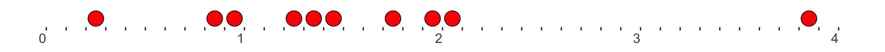
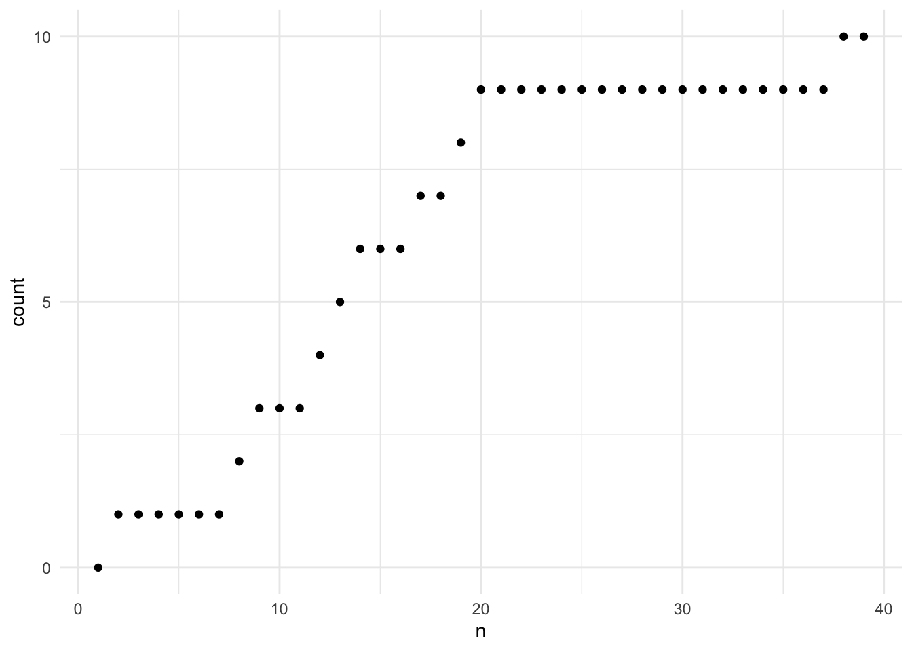
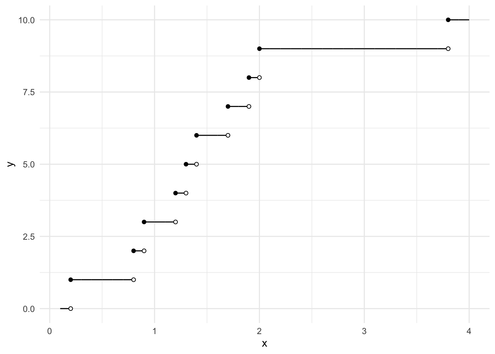

Chapter 1 The Poisson Process
All stochastic processes we have seen so far were discrete, i.e., their time set was \({\mathbb{N}}_0=\{0,1,\dots\}\) or its subset. The Poisson process is the first continuous-time process we are going to encounter. That means that the time set is the set \([0,\infty)\) of all nonnegative real numbers. The general theory of continuous-time processes is significantly more complex than the theory of discrete processes, but there are a few examples, like the Poisson process, that are both simple to describe and analyze and have numerous applications.
Before we give a rigorous definition of the the Poisson process, let us describe how it works heuristically. We start with a number \(\Delta t>0\) and conside the sequence \[\begin{align} [0,\Delta t],\ [\Delta t, 2 \Delta t], \ [2 \Delta t, 3\Delta t],\ \dots \end{align}\] of intervals in \([0,\infty)\) - we think of them as boxes. For each of these boxes, we toss a biased coin with the probability \(p\in (0,1)\) of obtaining heads (\(H\)) and place a ball in the box if an only if \(H\) is obtained. Here is a simple simulation of the this procedure; we take \(\Delta t = 0.05\), \(p=0.2\) and display the contents of the first \(40\) boxed, i.e., up to \(t=2\):

One way to describe the obtained allocation of balls to boxes is through the so-called counting process \(\{N_n\}_{n\in\mathbb N}\), where \(N_n\) is the total number of balls in the boxes numbered \(1,2,\dots, n\). The realization of the counting process corresponding to the allocation from above looks like this.
 Note that \(N\) is still a discrete process. To make it continuous, we give it the time-index \([0,\infty)\) and for \(t\geq 0\) define \(N_t\) as the number of balls in the boxes contained in \([0,t]\), i.e., in the first \(\lfloor t/\Delta t \rfloor\) boxes. This amounts to taking the trajectory of the discrete process \(N\), multiplying the times index by \(\Delta t\) and keeping its value constant throughout each interval \([k \Delta t, (k+1) \Delta t)\):
